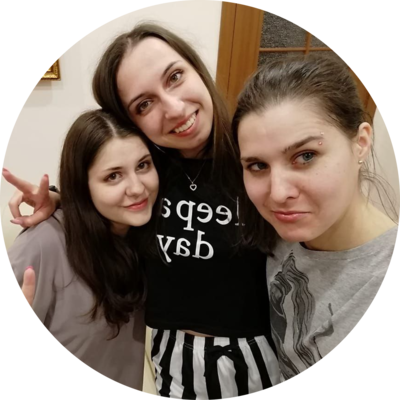

|  | История будет ко мне благосклонна, ибо я намерен ее написать.Эта страничка для самого особенного человечка. Да, да, она для тебя. Урок был о том, чтобы сделать страницу о себе, но я подумала, а почему бы не сделать её для тебя. Честно сказать, я так редко стала писать развёрнуто свои мысли, что совсем разучилась это делать. От этого очень грустно, ведь еще год назад хотела сделать свою игру, а 17-м году писала тебе подробные описания дня, снов, мыслей. Не хочется признавать, но кажется, я деградирую. Пускай эта страница будет доказательством того, что ещё не всё потеряно. Специально вставила такой громкий заголок потому что - почему бы и нет? Ведь раньше я именно так и считала, а сейчас будто побитая собака боюсь всего, боюсь жить. Но мы ведь справимся?... |
Пускай здесь будут перечисления нескольких причин, почему ты самая лучшая:
| № | Название игры |
|---|---|
| 1. | Серия Ведьмак (2-3) |
| 2. | Серия Масс Эффект |
| 3. | Серия Драгон Эйдж |
| 4. | Skyrim / Oblivion |
| 5. | Assasin's creed (1-3), Black Flag |
| 6. | BioShock |
| 7. | Detroit |
Нам нужно придумать, что сюда добавить...не так много всего вспомнила.
| Навык тюлениться | ⭐⭐⭐⭐⭐ | Программирование | ⭐⭐ |
| Изучение языков | ⭐⭐ | Путешествия | ⭐ |
| Создание собственного сайта/игры | ⭐ | Рисование | ⭐⭐ |